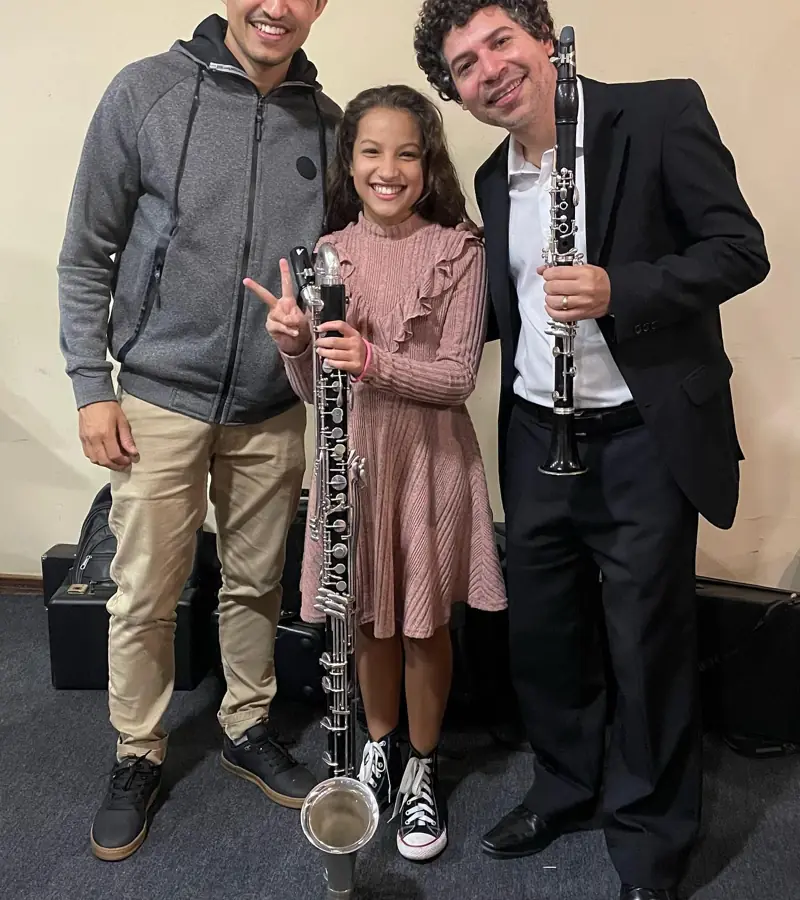
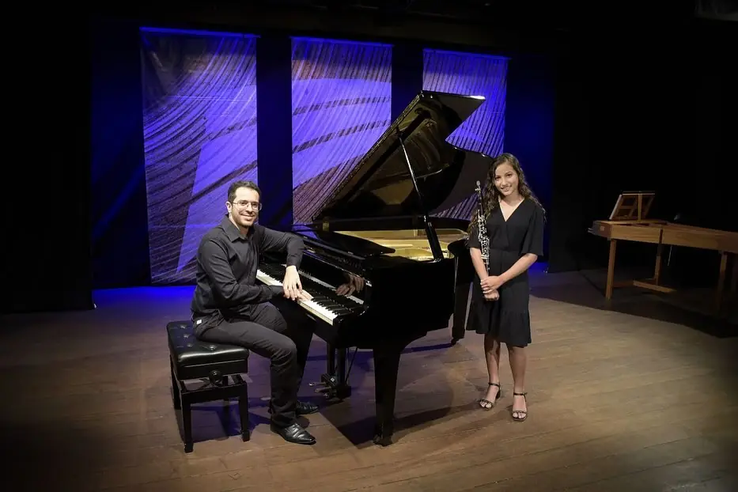
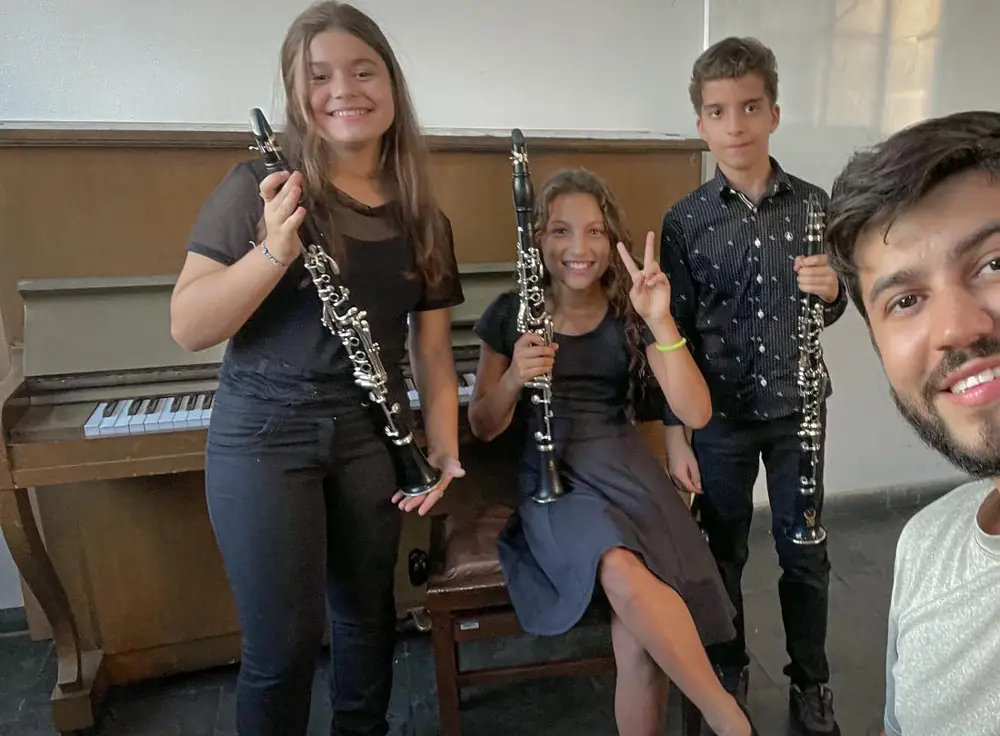
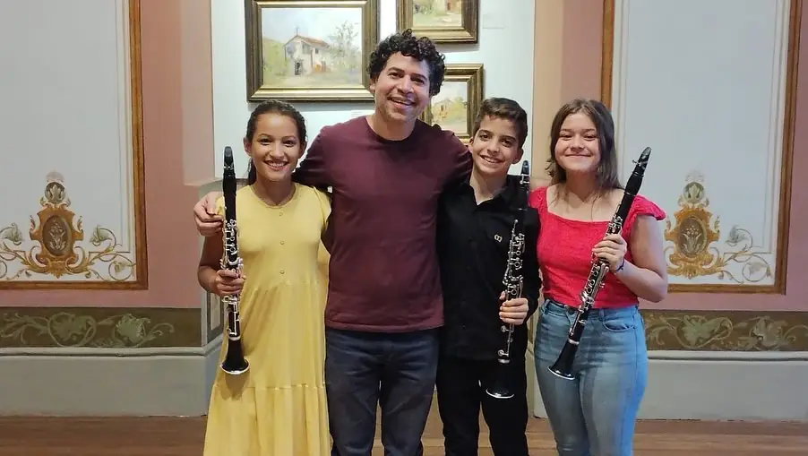
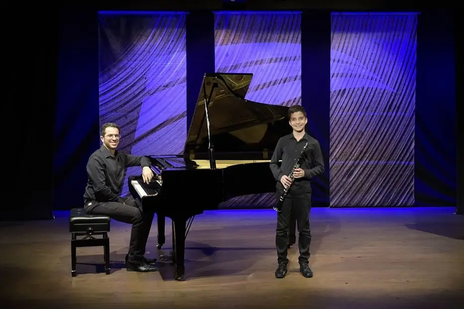

Amanda, Davi e Clara: da sala de aula ao palco da Assembleia


Os três estudavam clarinete com o professor Thiago Otoni quando foram selecionados por concurso para ter aulas com Alexandre Silva, clarinetista da Filarmônica de Minas Gerais e professor da UEMG. Dali em diante a agenda deles não parou.
- Selecionados para as aulas com Alexandre Silva.
- Amanda toca no concerto do Grupo de Clarinetistas da UEMG, com 25 clarinetistas.
- Primeiro ensaio do quarteto de clarinetes: Clara, Davi, Amanda e o professor Thiago.
- Masterclass com Iura de Rezende, professor da Illinois State University, no Museu Mineiro.
- Davi e Amanda tocam com o grupo de clarinetistas da UEMG em Belo Horizonte.
- Davi e Amanda se apresentam na Assembleia de Minas com a Fantasia Op. 43 de Niels Gade, a terceira apresentação deles na capital.


